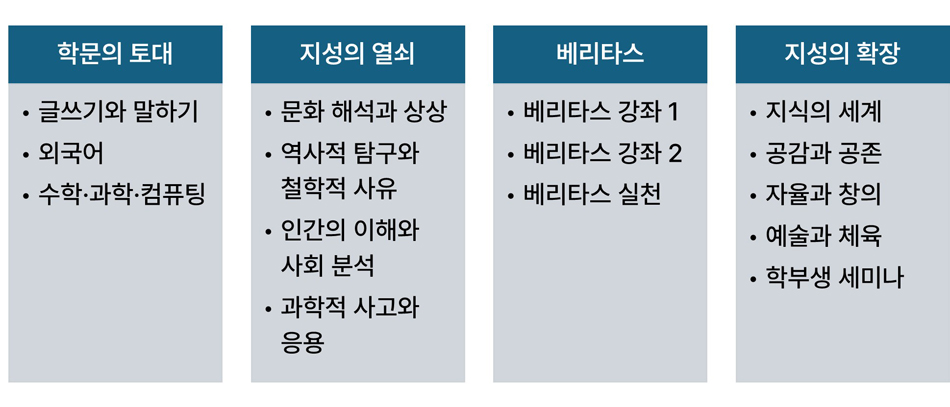
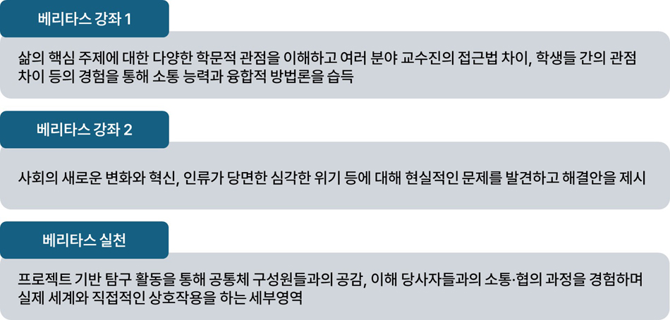
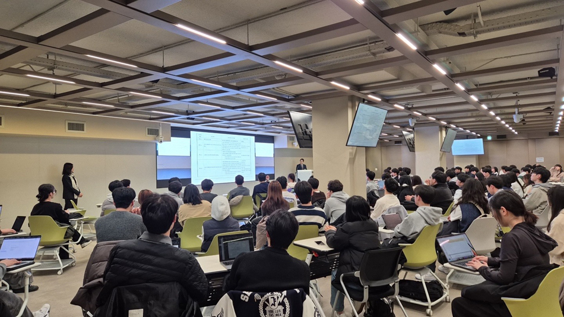

서울대학교 61동에서 진행된 학부대학 출범식
변화하는 시대 속에서 사회가 요구하는 인재상은 점차 달라지고 있다. 전공 중심의 대학 교육 방식 역시 유연한 대응이 필요해졌다. 올해 3월, 서울대학교는 시대의 요구 속에서 넓은 시야와 문제 해결 역량을 키울 수 있는 새로운 교육 체계를 마련하고자 학문 간 경계 를 허물고 공통교육을 강화하는 ‘학부대학’을 출범시켰다.
학부대학은 서울대학교 내에서 공통교육과 전공 학습을 위한 기초 역량 교육을 담당하며, 공 통핵심역량 및 융합 교육을 강화하는 교육 기구이다. 전공, 학과, 대학 간의 장벽을 허물고 융합형 인재를 기르는 교육 혁신을 선도하는 플랫폼 역할을 지향한다. 학부대학 설립은 단순한 조직 개편이 아니라 서울대학교 교육의 방향 전환을 의미한다. 개별 학문 단위의 벽을 넘어서 학생 개개인이 ‘도전과 공감으로 미래를 여는 지성’으로 성장할 수 있도록 돕는데 목적이 있다.
2023년 학부대학 협의체가 구성되며 교육 목표와 윤곽을 수립하였다. 2024년 상반기에는 설립추 진단이 조직 구성, 교육과정 설계, 물리적 공간 확보 등의 구체적인 준비를 했다. 하반기에는 설 립준비단이 공통교육과정 체제를 포함한 실질적 사항들을 정비함으로써 약 1년 반에 걸친 준비 끝 에 정식 출범하게 됐다. 학부대학은 자유전공학부와 광역 선발로 입학하는 학생들의 전공 탐색을 지원하고 전체 학부생을 대상으로 한 교과·비교과 프로그램을 통해 서울대학교 학생들의 전인적 성 장을 도모하는 것을 목표로 한다.
학부대학이 핵심적으로 추진하는 교육과정 혁신은 ‘공통교육과정’의 전면적인 개편이다. 기존 교양 교육이 기초소양 교육에 머물던 한계를 극복하고 전공교육과 유기적으로 연결되는 교육 기반을 구축 하려는 시도다. 공통교육은 특정 학문 분야에 국한되지 않고 보편적이면서 다학제적인 내용을 다루며 문해력과 비판적 사고력, 표현력, 의사소통 능력, 창의적 문제해결력, 세계 시민성 등의 핵심역량을 함양하는 데 초점을 맞춘다.
서울대학교는 2024년 중 기존의 ‘학문의 세계’를 포함한 교양 교육 체계를 전면 재정비하고 학생들이 변화하는 시대에 필요한 역량을 갖추도록 교육과정을 재설계하였다. 이로써 공통교육과정은 ‘도전혁 신’, ‘의사소통’, ‘사회공헌’, ‘문제해결’이라는 네 가지 공통핵심역량을 중심으로 구성됐다. 교양 교육은 단지 전공을 위한 사전 단계가 아니라 학생의 전공과 전공 사이를 잇는 연결망이자 창의적 사 고의 터전으로 기능하게 됐다.
학부대학의 공통교육과정
공통교육과정은 ▲학문의 토대 ▲지성의 열쇠 ▲베리타스 ▲지성의 확장의 네 개 영역으로 구성된다. 각 영역은 특정 교육 목표에 맞추어 고유한 교과목들을 포함한다. ‘학문의 토대’는 대학 수준의 기초학업 능력 함양을, ‘지성의 열쇠’는 폭넓은 지적 능력 개발을, ‘베리타스’는 융합적 사고와 실천적 태도 함양을, ‘지성의 확장’은 중대형 강의, 학생 자율 연구, 예술 및 체육 실기 수업, 소규모 분반 활동 등을 통해 사고와 관점을 넓히는 것이 목표다. 수업 규모도 소형 세미나부터 대형 하이브리드 강좌 까지 다양화되며, 학생들에게 맞춤형 학습 환경이 제공될 예정이다.
2025학년도부터는 공통교육과정의 틀 아래 모든 학부생을 대상으로 신규 교과목 개발이 대대적으로 추 진된다. 교과과정 개발은 학부대학 공통교육과정 개편 소위원회, 교과운영위원회, 교육운영위원회, 공 통교육위원회를 중심으로 체계적으로 진행되고 있다.
공통교육과정 개편의 핵심이자 학부대학의 교육 혁신을 상징하는 영역은 바로 ‘베리타스’다. 베리타스 는 시대가 요구하는 융합적·실천적 사고 역량을 기르기 위한 교과영역이다. 베리타스 수업은 문제를 스 스로 정의하고 창의적으로 해결하며 공동체와 협업할 수 있는 역량을 함양하는 데 중점을 둔다. 인간, 사회, 자연, 기술 등 다양한 분야의 ‘큰 질문’을 중심으로 구성된 수업은 학생이 단순히 지식을 습득 하는 것을 넘어서 주체적으로 학습하고 탐구하도록 설계됐다.
학부대학의 베리타스 교과과정
베리타스 영역은 〈베리타스 강좌1〉, 〈베리타스 강좌2〉, 〈베리타스 실천〉의 세 가지로 구성된다. 〈베리타스 강좌1〉은 1학년 학생을 대상으로 하는 입문형 강좌로 인간, 생명, 자유, 평등 등 삶의 근본적인 주제를 다양한 학문적 시각으로 탐구한다. 교수자들은 모든 강의 주차에 공동 참여하여 주제 의 융합적 접근을 도모한다. 학생들은 소규모 분반에서 활발한 토론을 통해 자신의 관점과 타인의 시 각을 이해하고 조율하는 경험을 쌓게 된다.
〈베리타스 강좌2〉는 고학년을 대상으로 한 고도화된 융합·실천형 강의로 기아, 갈등, 인구감소, 에너 지 전환 등 복합적 문제를 주제로 설정한다. 문제를 해결하는 창의적 아이디어와 실천적 결과물을 도출 한다. 〈베리타스 실천〉은 한 단계 더 현장 중심으로 이루어지는 수업이다. 수업은 소규모 학생 그룹이 자발적으로 프로젝트를 기획하고 실행하며 현실 사회 속 문제 해결을 직접 경험하는 기회이다. 학생들 은 공연, 설계, 전시, 정책 제안 등 다양한 형식으로 자신의 학습 내용을 표현하게 된다.
중앙도서관 베리타스 강의실에서 진행되고 있는 수업
실제 수업을 경험한 학생과 교수진은 ‘베리타스’ 수업이 기존 강의와는 확연히 다른 학습 경험을 제공한 다고 입을 모은다. 〈베리타스 강좌 1: 인공지능 시대의 문화예술〉을 수강 중인 신나경 학생(간호학과) 은 “예술을 주제로 한 수업에서는 전시회 견학, 교수님 강의, 조별 토론, 창작 활동이 모두 어우러져 주 도적인 학습을 경험할 수 있었다”라며 “학교 지원도 풍부해 참여도가 높았고, 다양한 교수님들과의 수업 을 통해 복합적인 시각을 기를 수 있었다”라고 전했다. “학생이 직접 자료를 만들어 공유하거나 서로의 관점을 자유롭게 교환하는 수업 방식이 특히 인상 깊었다”라고 덧붙였다.
〈베리타스 강좌 1: 뇌, 기계, 진화〉를 공동 강의하고 있는 이상아(뇌인지과학과), 박성준(첨단융합학부 ), 권가진(지능정보융합학과) 교수는 “인간의 마음과 뇌를 진화적 적응의 산물로 이해하는 것을 바탕으로, 뇌인지과학, 인간-컴퓨터 상호작용(HCI), 뇌-기계 인터페이스(BMI) 등 다양한 분야의 핵심 개념을 통합 적으로 다루는 융합형 수업”이라고 소개했다. 세 교수는 “전공이나 배경과 관계없이 모든 학생이 인간 인 지 기능의 기원과 작동 원리, 변화 가능성에 현대적 관점을 익히고, 사회적 맥락 속에서 사고할 수 있도록 돕고 있다”라고 강조했다. 특히 “뇌파(EEG), 피부전도(GSR) 기기 실습과 같은 활동은 학생들이 기술의 작동 원리뿐만 아니라 한계를 체감하고, 창의적인 방식으로 해결책을 고민하는 경험을 하게 된다”라고 전 했다. 교수진은 “학생들이 각자 전공 관점에서 질문을 던지고 타인의 관점과 연결해 통합적으로 사고하는 능력을 기르게 되는 것이 베리타스 수업이 지닌 가장 큰 의의이다”라고 설명했다.
베리타스 강좌는 교수 중심 강의에서 벗어나 학생이 주도하고 협업하며 실천하는 새로운 수업 모델을 구현한 다. 2025학년도부터는 모든 신입생에게 베리타스 영역의 3학점 이상 이수가 필수다. 학부대학은 1학기에는 17개, 2학기에는 약 25~30개 강좌를 개설하고 대학 내 전담 위원회 운영을 통해 교과목 관리와 개선을 체 계화할 예정이다.
학부대학은 교과과정뿐만 아니라 비교과 프로그램 영역에서도 전면적인 혁신을 추진하고 있다. 비교과 교육은 정규 교과과정 이외에 학생들의 다양한 능력과 경험을 향상하기 위해 제공되는 교육 활동이다. 자율성과 창의 성을 기르고 진로와 삶의 방향성을 탐색할 수 있는 중요한 과정이다. 학습 역량 강화, 진로 탐색, 자기주도 적 학습 설계, 협업 및 의사소통 능력 향상 등을 지원하는 다양한 형태의 프로그램들이 포함된다. 대표적으 로 일대일 학습상담, 학습 및 글쓰기 클리닉, 피어튜터링, 전공설계 워크숍, 진로 탐색 세미나, 자기설계 프로젝트 등이 있다.
비교과 프로그램의 체계적인 운영을 위해 기초교육원과 전공설계지원센터에서 각각 제공하던 비교과 프로그램 들이 학부대학으로 통합됐다. 서울대학교 내에서 가장 많은 비교과 프로그램을 운영하던 조직들이 하나의 체 계로 결합한 것이다. 앞으로 학부생 누구나 학부대학을 중심으로 다양하고 체계적인 비교과 교육을 이용할 수 있게 되었다.
학부대학은 도전혁신, 의사소통, 사회공헌, 문제해결이라는 네 가지 핵심역량 강화를 중심에 두고 비교과 프로 그램을 새롭게 설계하고 있다. 기존 기초교육원, 자유전공학부, 전공설계지원센터 등에서 운영해오던 우수 프로 그램은 고도화하고 학내 타 기관의 비교과 프로그램도 지원할 계획이다. 특히 전공 선택 이전 단계의 학생들이 다양한 경험을 통해 진로를 탐색할 수 있도록 진로 탐색형 현장 체험 프로그램과 자율성과 창의성을 키우는 비 교과 활동을 개발 중이다.
비교과 프로그램 기획 과정은 학생들의 의견을 적극 반영한다. 현장답사 등 실제 환경을 경험하는 체험형 프로 그램을 강화하는 데 초점을 두고 있다. 학부대학은 정규 교과와 비교과를 유기적으로 연계하고 학생들이 자신의 진로와 전공을 주도적으로 탐색하도록 다양한 프로그램을 지속적으로 확대해 나갈 예정이다.
서울대학교는 ‘도전과 공감으로 미래를 여는 지성’이라는 인재상을 바탕으로 전공과 전공을 잇고 강의실 안팎의 배움을 연결하며 지식과 실천 사이의 간극을 좁혀 나가고자 한다. 공통교육과정의 개편, 베리타스 강좌의 도입 , 비교과 프로그램의 혁신은 모두 변화의 일부다. 학부대학은 학생들이 더 폭넓게 탐구하고 진로에 대해 자발 적으로 고민할 수 있도록 다양한 교육적 지원을 이어갈 예정이다.
서울대학교 학생기자단
정예진 기자
yejane1228@snu.ac.kr